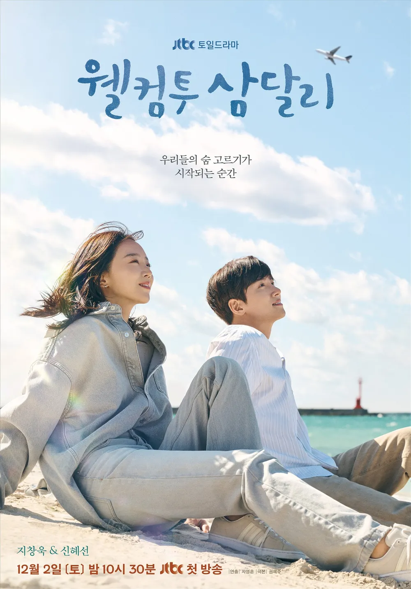

웹화면 구현 수업의 웹스터디 페이지
강보성
하나의 문단을 작성할 때는 P 태그를 사용합니다.
안녕하세요,
코딩 공부하기 좋은 날입니다.
- 영화소개 : 명량
- 《명량》(鳴梁)은 2014년 7월 30일에 개봉된 대한민국의 영화이다. 기획 단계에서, "명량 - 회오리바다"라는 제목으로 홍보가 이루어졌으나, 개봉 전 단계에서 제목이 수정되어 현재의 제목으로 개봉하였다. 개봉 12일만에 천만 관객을 돌파하여 한국 영화 사상 최단기간에 1천만 관객을 압도적으로 기록한 바 있다.
- 오늘의 패션 : 데일리 룩
- 꾸민듯 안꾸민듯 남자 데일리룩
가성비 최고 베스트 레이어드 코디를 소개합니다 :)
스티치가 포인트로 들어간 오버핏 반팔셔츠에
디자인이 이쁜 클래식 반팔 티셔츠와
떨어지는 핏이 정말 이쁜 고급슬랙스로
봄, 그리고 초여름 코디룩 상품으로 구성 했습니다 !
- 넷플릭스 소개: 웰컴투삼달리

- 한라산 자락 어느 개천에서 난 용 같은 삼달이 어느 날 모든 걸 잃고 곤두박질치며 추락한 뒤, 개천을 소중히 지켜온 용필과 고향의 품으로 다시 돌아와 숨을 고르는 이야기, 그리고 다시 사랑을 찾는 이야기